Introducció
Benvingut!
Benvingut a la documentació de l'aplicació de gestió de llibres i clients! Aquesta aplicació està dissenyada per proporcionar una solució eficient per a la gestió de dades relacionades amb llibres, clients i vendes.
Amb aquesta aplicació, podràs realitzar tasques com donar d'alta, donar de baixa i modificar llibres i clients, així com crear i consultar vendes.
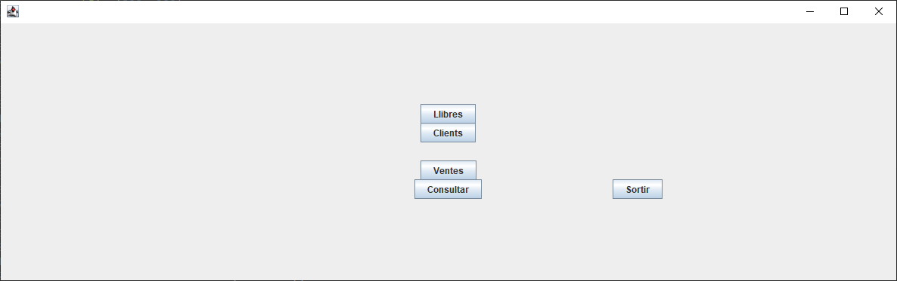Llibres
En aquesta secció, aprendràs com donar d'alta, donar de baixa i modificar llibres a través de l'aplicació.
També aprendràs com buscar i consultar informació relativa als llibres emmagatzemats.
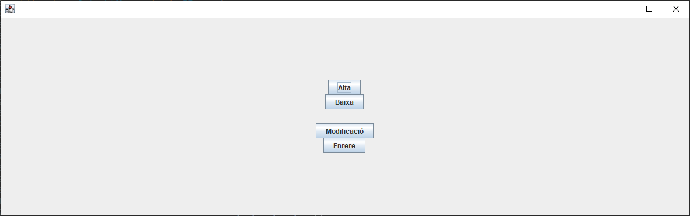Alta d'un llibre
En aquesta foto que veiem a sota podem veure com és la pantalla per a donar d'alta un llibre.
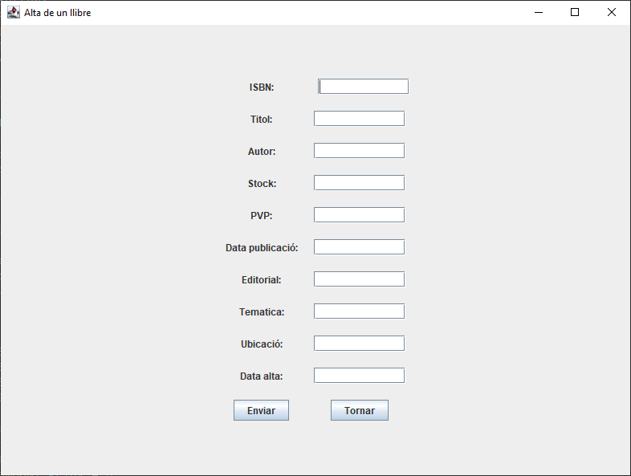Podem veure com hem d'omplir els camps amb les dades que ens demana, és a dir, al camp d'ISBN haurem d'indicar l'ISBN del llibre que vulguem afegir, al camp del nom haurem d'afegir el nom del llibre en qüestió...
Si deixem algun camp en blanc, no ens deixarà afegir el llibre.
Baixa d'un llibre
En aquesta foto que veiem a sota podem veure com és la pantalla per a donar de baixa un llibre.
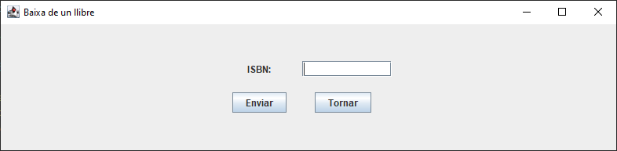En aquesta pantalla podem veure com hem d'indicar quin és l'ISBN per a eliminar un llibre.
Si no afegim cap ISBN al camp no eliminarà cap llibre.
Modificació d'un llibre
En aquesta foto que veiem a sota podem veure com és la pantalla per a modificar la informació d'un llibre.
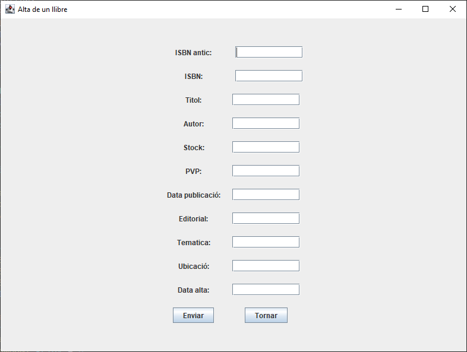En aquesta pantalla podem veure com podem modificar la informació que tenim sobre un llibre.
El funcionament és el següent: has d'indicar l'ISBN del llibre el qual vols modificar, sota seu quin és el nou ISBN, i sota tota la nova informació, com nom del llibre, estok, preu...
Si no omplim tots els camps de la modificació, no ens deixarà modificar el llibre.
Clients
Aquí descobriràs com gestionar els clients, incloent-hi les tasques d'alta, baixa i modificació de dades de clients.
També aprendràs a consultar la informació relacionada amb els clients existents.
Alta d'un Client
En aquesta foto que veiem a sota podem veure com és la pantalla per a donar d'alta un client al sistema.
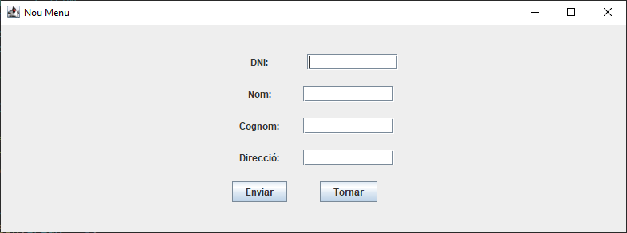Podem veure com hem d'omplir els camps amb les dades que ens demana, és a dir, al camp de DNI haurem d'indicar el DNI del client que vulguem afegir, al camp del nom haurem d'afegir el nom del client en qüestió...
Si deixem algun camp en blanc, no ens deixarà afegir el client.
Baixa d'un client
En aquesta foto que veiem a sota podem veure com és la pantalla per a donar de baixa un client.
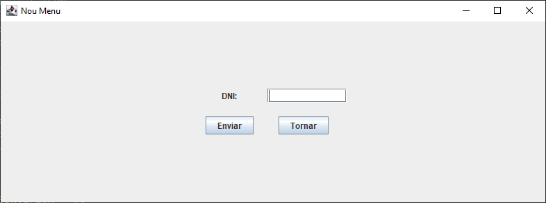En aquesta pantalla podem veure com hem d'indicar quin és el DNI del client que volem donar de baixa del sistema.
Si no afegim el DNI al camp no eliminarà cap client.
Modificació d'un client
En aquesta foto que veiem a sota podem veure com és la pantalla per a modificar la informació d'un client.
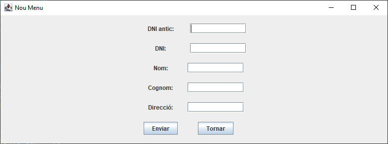En aquesta pantalla podem veure com podem modificar la informació que tenim sobre un client.
El funcionament és el següent: has d'indicar el DNI del client el qual vols modificar, sota seu quin és el nou DNI, i sota tota la nova informació, com el nou nom, cognom, direcció...
Si no omplim tots els camps de la modificació, no ens deixarà modificar el client.
Vendes
En aquesta secció, exploraràs com crear noves vendes utilitzant l'aplicació.
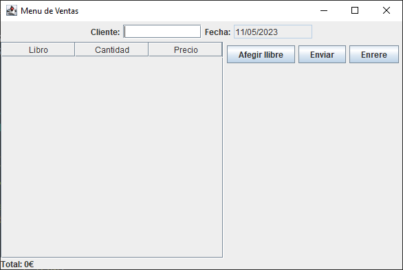En aquesta foto, podem veure com és la interfície de crear vendes. A la part superior podem veure que hem d'indicar el DNI del client el qual fa la comanda i a la seva dreta el dia d'avui.
Sota a la part de l'esquerra podem veure una taula que serà on s'aniran afegint els llibres els quals afegim a la comanda del client, i a la seva dreta tres botons: Afegir llibre, Enviar, Enrere
Consulta
Finalment, aquesta secció et guiarà sobre com realitzar consultes específiques per obtenir informació detallada sobre llibres, clients i vendes emmagatzemats.
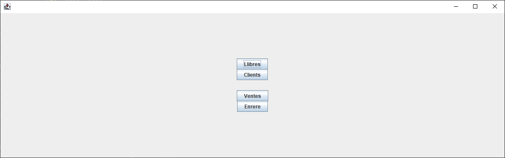En aquesta foto de damunt podem veure com és el menú per a consultar les dades tant de llibres, clients com vendes.
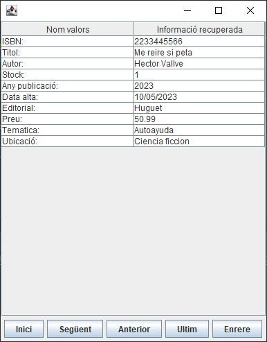Aquí podem veure un exemple de com quedaria la consulta d'un llibre, amb els botons de la part inferior podem, navegar al primer o al ultim llibre, passar d'un en un, o tornar a la pantalla anterior.
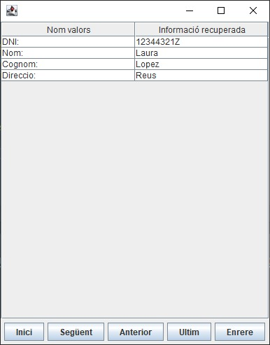En aquesta captura podem veure un exemple de com quedaria la consulta d'un client, amb els botons de la part inferior podem, navegar al primer o al ultim client, passar d'un en un, o tornar a la pantalla anterior.
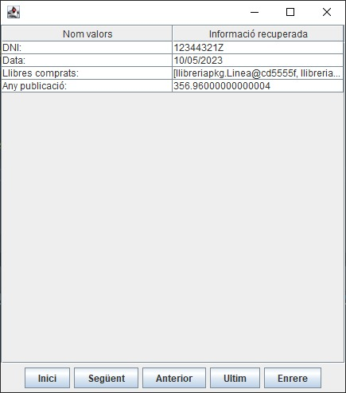En la imatge superior podem veure un exemple de com quedaria la consulta d'una venda, amb els botons de la part inferior podem, navegar a la primera o a la ultima venda, passar d'una en una, o tornar a la pantalla anterior.